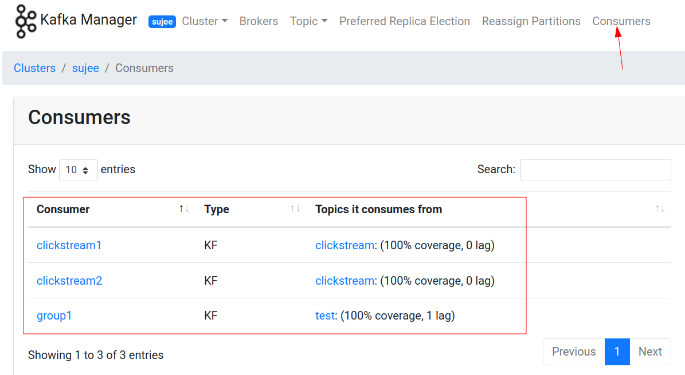
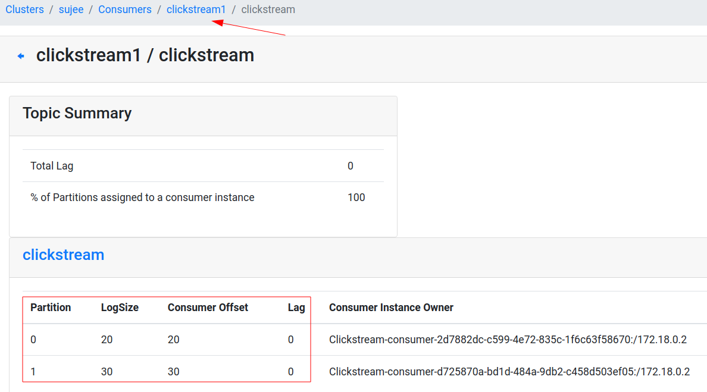

Please do the lab together with students, step by step
Use Producer / Consumer API
None
40 mins
$ ~/apps/kafka/bin/kafka-topics.sh --bootstrap-server localhost:9092 --create \
--topic clickstream --replication-factor 1 --partitions 2In a terminal
$ ~/apps/kafka/bin/kafka-console-consumer.sh \
--bootstrap-server localhost:9092 \
--property print.key=true --property key.separator=":" \
--topic clickstreamor if you have Kafkacat
$ kafkacat -q -C -b localhost:9092 -t clickstream -f 'Partition %t[%p], offset: %o, key: %k, value: %s\n'src/main/java/x/lab03_api_intro/ClickstreamProducer.javaIn Eclipse,
In Eclipse console, you should see output as follows:
Producer starting.... : ClickstreamProducer (topic=clickstream, maxMessages=10, freq=1000 ms)
sending : ProducerRecord(topic=clickstream, partition=null, headers=RecordHeaders(headers = [], isReadOnly = false), key=facebook.com, value={"timestamp":1451635200005,"session":"session_251","domain":"facebook.com","cost":91,"user":"user_16","campaign":"campaign_5","ip":"ip_67","action":"clicked"}, timestamp=null)
sending : ProducerRecord(topic=clickstream, partition=null, headers=RecordHeaders(headers = [], isReadOnly = false), key=foxnews.com, value={"timestamp":1451635200010,"session":"session_224","domain":"foxnews.com","cost":17,"user":"user_89","campaign":"campaign_4","ip":"ip_57","action":"viewed"}, timestamp=null)The messages should show up in Kafka console terminal !
Yay !!
Question: Are the messages coming in order? (check the key) Why or why not?
Can you make the messages come ‘out of order’?
Hint : Reduce the time interval between messages on producer side
:-)
In our producer we are sending our records without waiting for response
producer.send(record)Take a note at the average time taken to send a record. Should be around 0.1 - 0.5 ms range.
Now update the code to wait for the response from Kafka broker, as follows
producer.send(record).get()Action: Run the code again, and note the average time to send each record. How much difference do you notice?
src/main/java/x/lab03_api_intro/ClickstreamConsumer.javasrc/main/java/x/lab03_api_intro/ClickstreamConsumer.java=> In Eclipse, monitor output from two of these
programs
Hint : you may need to switch to Debug view
=> Also what is happening in Kafka console consumer?
src/main/java/x/lab03_api_intro/ClickstreamConsumer.javasrc/main/java/x/lab03_api_intro/ClickstreamConsumer.javasrc/main/java/x/lab03_api_intro/ClickstreamProducer.javaRun three consumers and see which ones are getting data. Can you explain the behavior?
Inspect the consumer tab in Kafka Manager. Here we can see various consumer groups and what they are reading.
Note the following:


So far we have been using Eclipse. Let’s try to compile and run the code with maven.
$ cd ~/dev/kafka-labs
$ mvn clean package -DskipTestsInspect the target directory. You will see 2 jars.
$ ls -lh target-rw-r--r-- 1 ubuntu ubuntu 68M Nov 23 13:38 kafka-labs-2.0-jar-with-dependencies.jar
-rw-r--r-- 1 ubuntu ubuntu 67K Nov 23 13:38 kafka-labs-2.0.jarkafka-labs-2.0.jar only has our classeskafka-labs-2.0-jar-with-dependencies.jar has our code
and all dependencies included. This is a convenient way to run our
application withuot having to worry about dependencies.You can checkout the classes included in a jar file as follows:
# check the lite version
$ jar tf target/kafka-labs-2.0.jar | less
# hit 'q' to exit paging
# check the mega version
$ jar tf target/kafka-labs-2.0-jar-with-dependencies.jar | less
# hit 'q' to exit pagingTry this to start the consumer
$ cd ~/dev/kafka-labs
$ java -cp target/kafka-labs-2.0-jar-with-dependencies.jar x.lab03_api_intro.ClickstreamConsumer
# another option is running via maven
$ mvn exec:java -Dexec.mainClass=x.lab03_api_intro.ClickstreamConsumerOpen another terminal and start the producer
$ cd ~/dev/kafka-labs
$ java -cp target/kafka-labs-2.0-jar-with-dependencies.jar x.lab03_api_intro.ClickstreamProducer
# or using maven
$ mvn exec:java -Dexec.mainClass=x.lab03_api_intro.ClickstreamProducerWatch the consoles of both producer and consumer